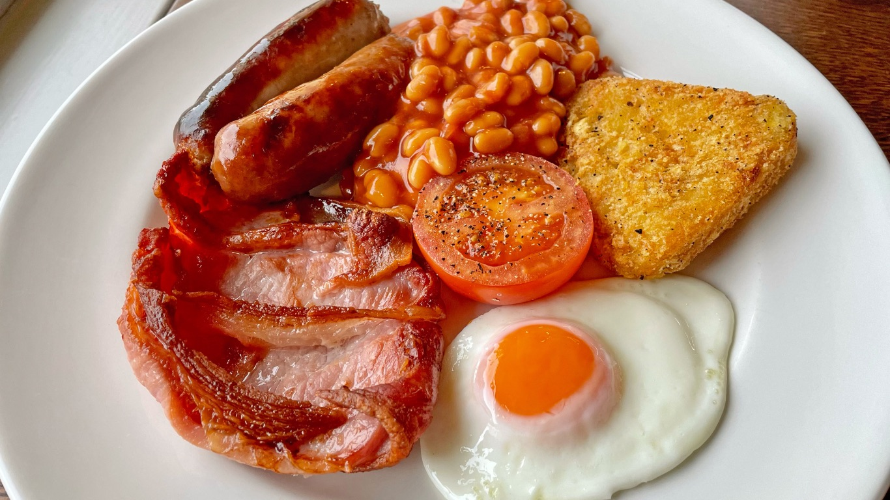
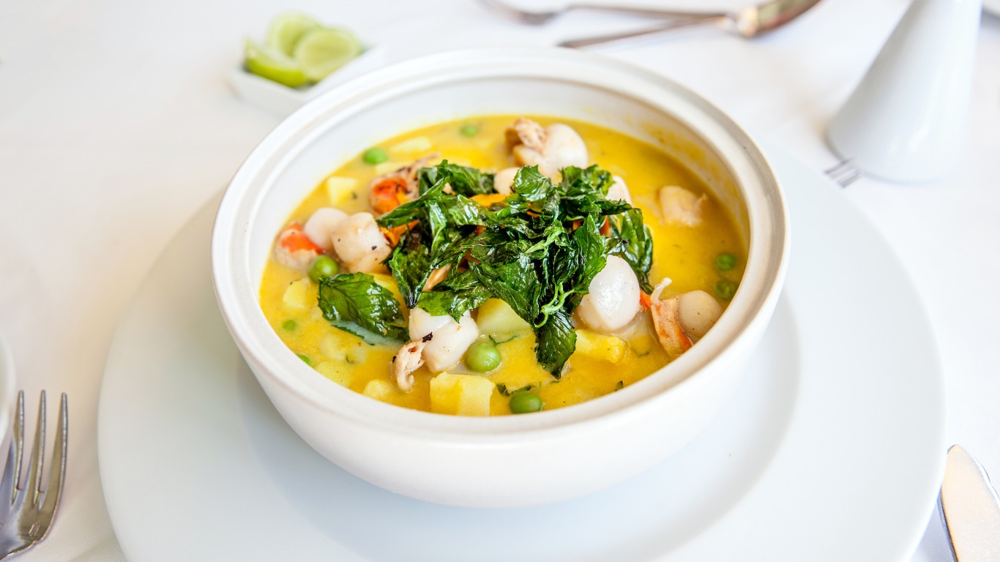
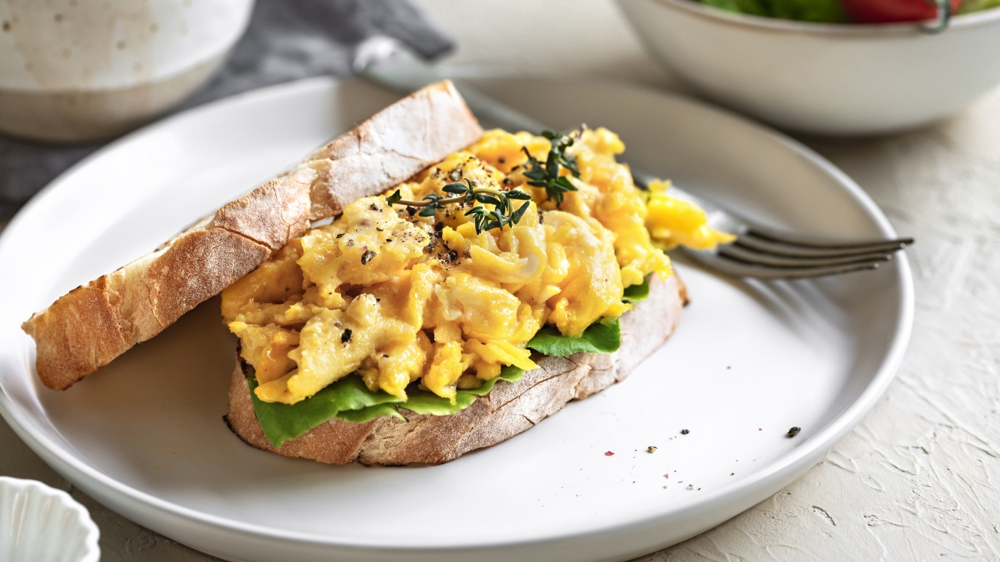
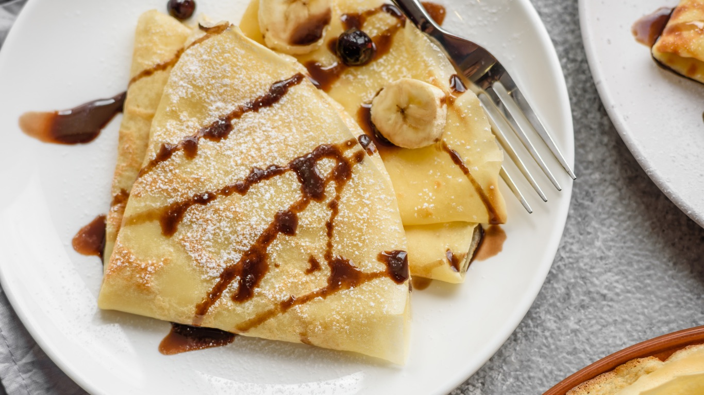

Budova Aircraft · Ivánska cesta
Chutné denné menu a raňajky pri letisku v Bratislave
Poctivé, rýchle a cenovo dostupné jedlo pre všetkých, ktorí pracujú v okolí letiska a obchodných zón v Ružinove. Už aj na rozvoz.
Raňajkové menu

Raňajkové a obedové menu najvyššej kvality
Raňajky a obedy pripravujeme z kvalitných slovenských surovín – vajíčka od sliepok z voľného chovu a mäso z overených fariem. Poctivé chute, na ktoré sa oplatí vrátiť.



Kde nás nájdete
Adresa
Ivánska cesta 30/B, Bratislavabudova Aircraft
Otvorené Po – Pi
Raňajky: 7:00 – 10:30Obedy: 11:00 – 14:00